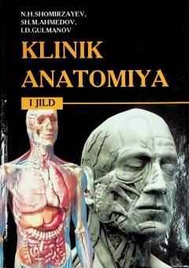

KATibbiyot oliygohlari talabalari uchun klinik anatomiya va jarrohlik asoslari bo'yicha darslik.
Ushbu darslik tibbiyot oliy o'quv yurtlari talabalari uchun klinik anatomiya fanining asosiy masalalari va jarrohlik operatsiyalarining funksional asoslarini yoritib beradi. Kitobda ichki a'zolar topografiyasi, qon tomir-nerv tutamlari hamda zamonaviy jarrohlik usullari va apparatlari haqida batafsil ma'lumotlar keltirilgan.